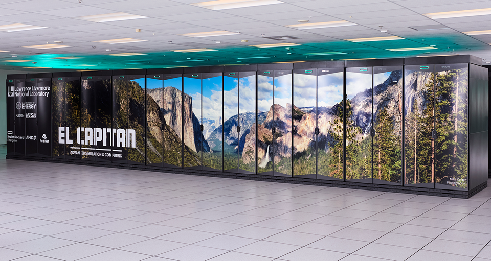
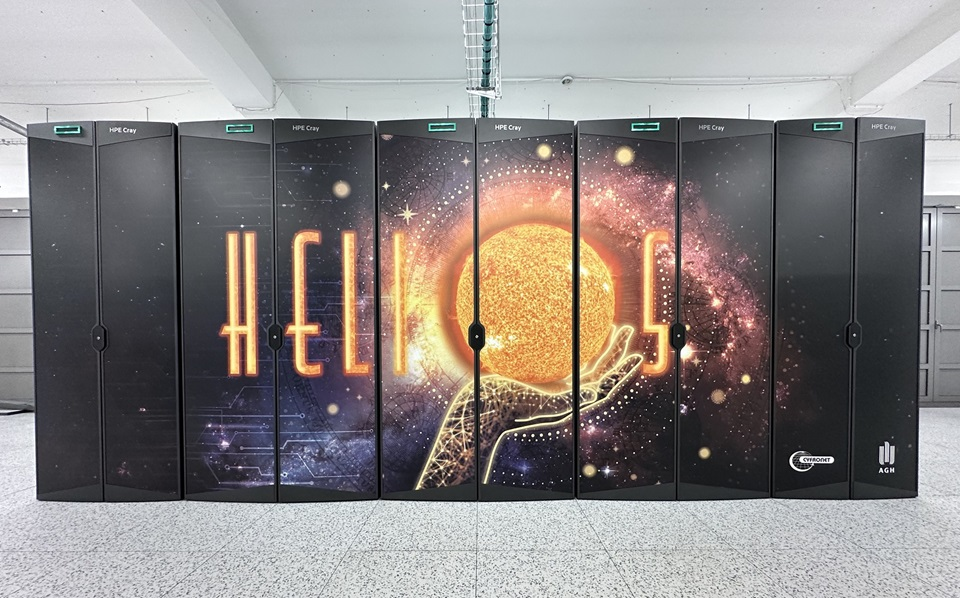
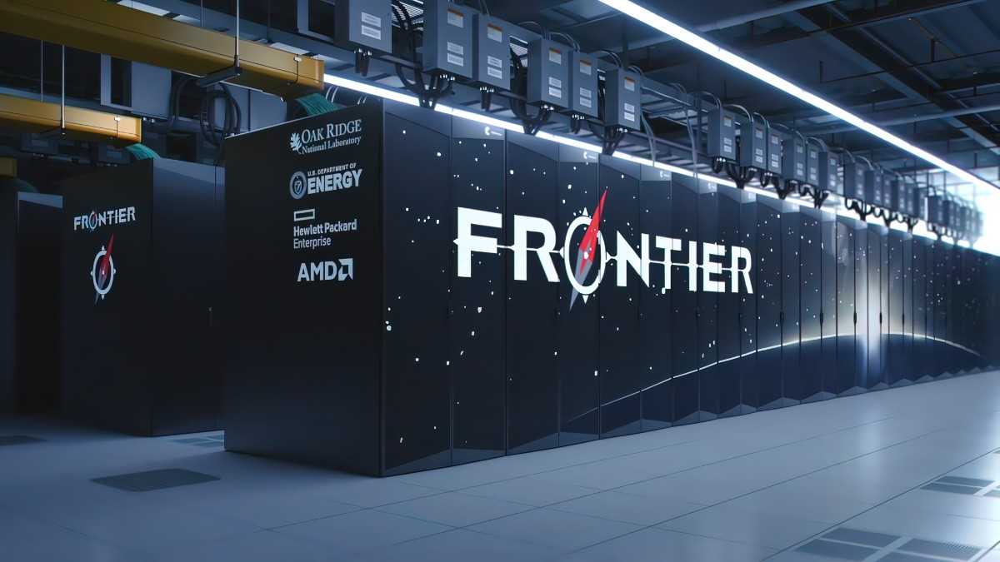

Wstęp
Współczesny świat nauki, techniki i przemysłu w coraz większym stopniu opiera się na ogromnych ilościach danych oraz bardzo złożonych obliczeniach, których wykonanie nie byłoby możliwe przy użyciu zwykłych komputerów osobistych. W odpowiedzi na te potrzeby powstały superkomputery, czyli wyspecjalizowane systemy obliczeniowe o niezwykle dużej mocy przetwarzania danych. Superkomputery są wykorzystywane między innymi w badaniach klimatycznych, fizyce cząstek elementarnych, medycynie, energetyce, przemyśle zbrojeniowym oraz w rozwoju sztucznej inteligencji. Ich wydajność mierzona jest w operacjach zmiennoprzecinkowych na sekundę, a porównanie poszczególnych maszyn umożliwia międzynarodowy ranking TOP500.
El Capitan
Superkomputer El Capitan znajduje się w Stanach Zjednoczonych, w Lawrence Livermore National Laboratory i jest wykorzystywany głównie przez amerykańskie instytucje rządowe oraz ośrodki badawcze, w szczególności do symulacji związanych z bezpieczeństwem narodowym, fizyką jądrową oraz zaawansowanymi badaniami naukowymi. El Capitan opiera się na nowoczesnej architekturze wykorzystującej ogromną liczbę procesorów centralnych oraz akceleratorów graficznych, których łączna liczba sięga setek tysięcy rdzeni obliczeniowych. System operacyjny zarządzający pracą El Capitana to specjalnie dostosowana wersja systemu Linux, a jego wydajność liczona jest w setkach petaflopów, co zapewnia mu czołowe miejsce w rankingu TOP500.
Jupiter Booster
Jupiter Booster to europejski superkomputer zlokalizowany w Niemczech i stanowiący część infrastruktury badawczej EuroHPC. Wykorzystywany jest przez naukowców z całej Europy do badań dotyczących klimatu, chemii obliczeniowej, prognozowania pogody oraz rozwoju nowych materiałów. System składa się z ogromnej liczby procesorów CPU i GPU, posiada pamięć operacyjną liczona w petabajtach i pracuje pod kontrolą systemu Linux. Wysoka wydajność Jupiter Booster lokuje go na czołowych pozycjach w rankingu TOP500.

Helios GPU
Helios GPU to superkomputer zaprojektowany z myślą o intensywnym wykorzystaniu kart graficznych do obliczeń naukowych. Jest wykorzystywany do analiz związanych ze sztuczną inteligencją, przetwarzaniem dużych zbiorów danych oraz uczeniem maszynowym. Helios GPU posiada tysiące akceleratorów graficznych współpracujących z procesorami centralnymi, pracuje pod kontrolą systemu Linux i zajmuje wysokie miejsca w rankingach wydajnościowych dzięki olbrzymiej mocy obliczeniowej.
Tianhe‑2
Tianhe‑2 to chiński superkomputer zlokalizowany w Narodowym Centrum Superkomputerowym w Kantonie. W przeszłości zajmował pierwsze miejsce w rankingu TOP500, osiągając wydajność rzędu kilkudziesięciu petaflopów. Wykorzystywany jest w badaniach wojskowych, inżynieryjnych oraz naukowych, a jego system operacyjny oparto na Linuxie dostosowanym do chińskiej architektury sprzętowej.

Frontier
Frontier to obecnie jeden z najszybszych superkomputerów świata, znajdujący się w Oak Ridge National Laboratory w Stanach Zjednoczonych. Dzięki wydajności przekraczającej jeden eksaflop Frontier reprezentuje obecny szczyt możliwości technologicznych. System jest wykorzystywany w badaniach fizyki, biologii, energetyki i modelowania zjawisk naturalnych, działa pod kontrolą systemu Linux i posiada pamięć operacyjną liczona w petabajtach.
Perspektywy rozwoju superkomputerów
Rozwój superkomputerów umożliwia rozwiązywanie problemów naukowych dotyczących klimatu, chemii, projektowania leków, rozwoju energetyki oraz badań kosmicznych. W przyszłości przewiduje się wzrost znaczenia systemów eksaskalowych, integrację z kwantowymi metodami obliczeniowymi oraz wzrost roli sztucznej inteligencji. W kontekście architektury systemów szczególne znaczenie ma liczba procesorów oraz sposób ich współpracy, a także optymalizacja oprogramowania, która decyduje o realnej skuteczności obliczeń.
Opinie i refleksje
Wywiad z dr Anną Nowak czyta się bardzo przyjemnie i z zainteresowaniem. Temat jest ciekawy, bo dotyczy zmian klimatu, nowoczesnych technologii i superkomputerów, czyli rzeczy, o których często się słyszy, ale rzadko ktoś tłumaczy je w prosty sposób.
Dużym plusem wywiadu są pytania zadawane przez reporterkę. Są naturalne i takie, jakie naprawdę mógłby zadać uczeń liceum. Dzięki temu rozmowa nie brzmi sztucznie, tylko jak prawdziwy dialog. Odpowiedzi dr Anny Nowak są jasne i zrozumiałe, nawet dla osób, które nie interesują się na co dzień informatyką czy nauką.
Ciekawie pokazano też, że można pracować przy bardzo nowoczesnych projektach, współpracując z zespołem korzystającym z ICM Uniwersytetu Warszawskiego i takimi maszynami jak superkomputer Okeanos, nawet mieszkając w małym mieście. To daje nadzieję i motywację młodym ludziom z mniejszych miejscowości, że miejsce zamieszkania nie musi ograniczać marzeń.
Wywiad ma bardzo pozytywne przesłanie. Pokazuje, że nauka, technologia i ciężka praca mogą prowadzić do ciekawej i potrzebnej kariery. Wypowiedzi bohaterki zachęcają do nauki i rozwijania swoich zainteresowań, szczególnie w kierunku przedmiotów ścisłych.
Podsumowując, jest to ciekawy, przystępny i inspirujący wywiad. Może zainteresować młodzież i pokazać, że nowoczesna nauka nie jest tak odległa, jak mogłoby się wydawać. Idealnie nadaje się do szkolnej gazetki albo jako praca na lekcję języka polskiego.
Wywiad z dr Anną Nowak – specjalistką ds. modelowania klimatu
Miejsce rozmowy: małe miasteczko na Podlasiu
Rozmówczyni: dr Anna Nowak – współpracuje z zespołem korzystającym z superkomputera ICM Uniwersytetu Warszawskiego
Reporter (uczennica klasy 3 liceum):
Dzień dobry! Bardzo dziękuję, że zgodziła się Pani na rozmowę. Na początek chciałabym zapytać – czym dokładnie się Pani zajmuje?
Dr Anna Nowak:
Na co dzień zajmuję się modelowaniem klimatu i prognozowaniem ekstremalnych zjawisk pogodowych.
Współpracuję z zespołem naukowców, którzy wykorzystują superkomputery do symulacji zmian klimatycznych.
Reporter:
Superkomputer brzmi bardzo poważnie. Czy mogłaby Pani wyjaśnić, czym on właściwie jest?
Dr Anna Nowak:
Superkomputer to maszyna o ogromnej mocy obliczeniowej, tysiące razy szybsza od zwykłego laptopa.
W Polsce jednym z najszybszych superkomputerów jest superkomputer Okeanos znajdujący się w Warszawie.
Dzięki takim maszynom możemy analizować ogromne ilości danych, na przykład symulować pogodę na całym świecie.
Reporter:
A jak to się stało, że pracuje Pani z tak nowoczesną technologią, mieszkając w małym mieście?
Dr Anna Nowak:
Większość pracy wykonuję zdalnie. Mam szybkie łącze internetowe i łączę się z serwerami w Warszawie.
Dzięki temu mogę mieszkać blisko natury, a jednocześnie pracować przy światowej klasy projektach.
Reporter:
Jak wygląda Pani typowy dzień pracy?
Dr Anna Nowak:
Rano analizuję wyniki symulacji liczonych przez noc na superkomputerze.
Później uczestniczę w wideokonferencjach z zespołem, często także z naukowcami z innych krajów.
Reporter:
Czy taka praca jest trudna?
Dr Anna Nowak:
Wymaga wiedzy z matematyki, fizyki i informatyki, ale daje ogromną satysfakcję,
zwłaszcza gdy nasze prognozy pomagają ostrzegać ludzi przed zagrożeniami.
Reporter:
Czy młodzi ludzie z małych miejscowości mają szansę pracować z tak zaawansowaną technologią?
Dr Anna Nowak:
Oczywiście. Dostęp do internetu, chęć nauki i determinacja są dziś ważniejsze niż miejsce zamieszkania.
Reporter:
Czy sztuczna inteligencja jest wykorzystywana w Pani pracy?
Dr Anna Nowak:
Tak, algorytmy AI pomagają szybciej analizować dane i wykrywać wzorce.
To przyszłość badań klimatycznych.
Reporter:
Czy poleciłaby Pani taką ścieżkę kariery uczniom liceum?
Dr Anna Nowak:
Zdecydowanie tak. Superkomputery i nowoczesne technologie to teraźniejszość,
a świat potrzebuje młodych, ambitnych ludzi.
Reporter: Bardzo dziękuję za rozmowę!
Dr Anna Nowak: Dziękuję i życzę powodzenia w dalszej nauce.
Podsumowanie
Superkomputery pełnią kluczową rolę w rozwoju nowoczesnej nauki oraz techniki. Przykłady takie jak El Capitan, Jupiter Booster, Helios GPU, Tianhe‑2 i Frontier pokazują tempo postępu technologicznego i rosnącą rolę obliczeń wielkoskalowych w rozwiązaniach globalnych problemów. Dzięki zastosowaniu nowoczesnych architektur oraz dedykowanego oprogramowania możliwe jest wykonywanie obliczeń, które jeszcze niedawno były poza zasięgiem współczesnych technologii.
Źródła
- www.top500.org
- Oak Ridge National Laboratory – Frontier
- Lawrence Livermore National Laboratory – El Capitan
- EuroHPC Joint Undertaking
- National Supercomputing Center – Tianhe‑2